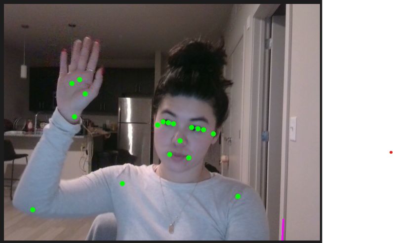

here's the final version!
I'm not positive that the embedded link is working so it is also here
Once I saw the BodyPose Model I knew I wanted to do something around movement/dance. I did a little brainstorming and first though of things like Just Dance that map the dancers in a fun and surreal way.
My first thought was to duplicate your body pose and make some mini mes that dance around with you too. Since I don't expect all users to be standing fully or have their full body in frame, I decided to go with another idea.
The next thought I had was to use your body to draw. Differenty body segements may be different colors or erase at different speeds. Maybe they don't erase at all or the color depends on the speed of your body.

Here is what it looks like when we take the starter code for the BodyPose Model and then
made sure to flip the screen to actually mirror what you're doing.

I then switched over to the BlazePoze version of the BodyPose Model so that there are a few more nodes.
Next we (in class) created a line between the right elbow and wrist in each frame so you can sort of draw with it.
I then switched the line to be drawn between the right index pointed and right wrist and made sure I stood up to test it out.
My next idea was for it to be more paint like, so I drew different colored dots on each index finger. I'm a little perplexed on why it isn't as smooth as I was imagining but maybe it's just video lag? We'll continue on and see what we can do about it later.
Then I added in points for my right and left ankles and used red, blue, green, and yellow for them.
This one took me some time but I finally got it to erase dots that are older than 3 seconds (and was really excited).
Then I played around with the time intervals and the colors so that it felt closer to what I was imagining. It almost feels like pixie dust trails to me! Settled on a 1500ms delay to erase and a lighter blue because I think it looks coolest in a dark room to demo.
Really excited about this! but my next step would be to change the color of the dots according to how fast the body points move.